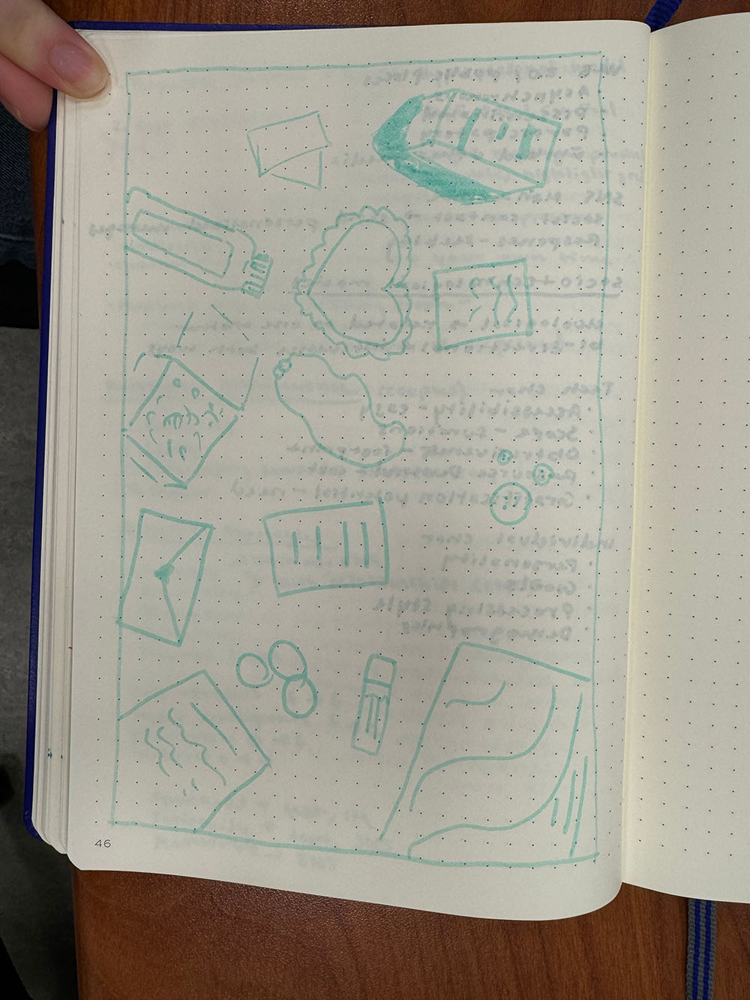

Every Picture Project Development
Originally, I was going to collage and compile different images from my past. However, after talking with my peers, my idea has changed to taking photo of current items I have that are important to me or have some story behind them.
